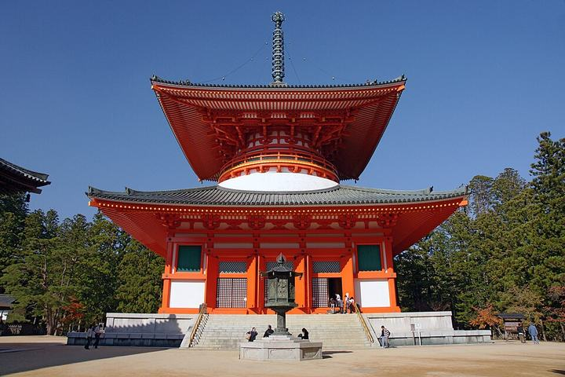
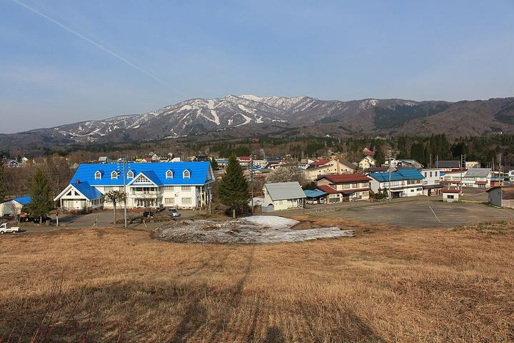

Japan Trip September
Two ways to spend the same three days out of Osaka, both home to Hōshin every night, vegetarian throughout, with a live map and forecast inside. The train plan is the one for this trip; the driving plan is kept for the next time there is a car.

This trip · by trainTrain, bus and boat
Kōyasan’s cedar cemetery and temple lunch, Lake Biwa from a 1,100 m terrace and Ōmi-Hachiman’s canals, and Amanohashidate with the boathouses of Ine. Flat paths, dress-friendly, ordered by the forecast.
- Day 1Lake Biwa: Biwako Terrace, Hachiman-bori, La Collina
- Day 2Kōyasan: Okunoin, Kongōbu-ji, shōjin ryōri, Danjō Garan
- Day 3Tango coast: Amanohashidate, Kasamatsu, Ine

Kept for later · by carDriving
Three loops from Hōshin with real road routes, parking for every stop, tolls, and the rental desks near home. Saved for the next trip with a car.
- LoopThat Bench, Hirugano Plateau, Gujō Hachiman
- LoopŌdaigahara, Mitarai Valley, Dorogawa Onsen
- LoopImafuku Falls, Amanohashidate, Ine, Yuhigaura sunset
The forecast panel on each plan refreshes live from Open-Meteo and shows 17–20 September; the driving plan’s dates and weather ordering still refer to this September and can be repointed when you next rent a car.